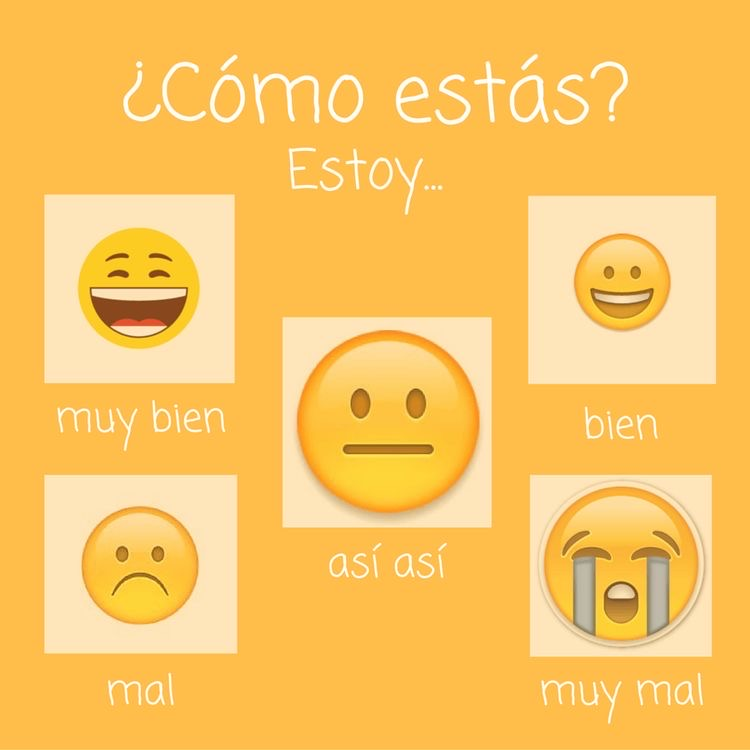

Lección 1: ¡Encantado/a! 很高興見面！

- 早安：¡Buenos días!
- 午安：¡Buenas tardes!
- 晚安：¡Buenas noches!
A: ¡Hola!¿Cómo estás?
你好，最近好嗎？
B: Estoy muy bien / bien / así así / mal / muy mal, gracias ¿y tú?
我非常好／還不錯 / 普通 / 不太好／非常不好，你呢？
A: ¡Hola!¿Cómo estás?
你好，最近好嗎？
B: Estoy muy bien / bien / así así / mal / muy mal, gracias ¿y tú?
我非常好／還不錯 / 普通 / 不太好／非常不好，你呢？
Me llamo Julianne. 我的名字叫Julianne。
Soy de Taiwan. 我來自台灣。
Te llamas Ángel. 你的名字叫Ángel。
Eres de España. 你來自西班牙。
Se llama Sara. 她的名字叫Sara。
Es de Argentina. 她來自阿根廷。
Se llama Ana y trabaja de professor en Japón.
Se llama Javier y trabaja de dependiende en Estados Unidos.
Se llama Luis y trabaja de abogado en España.
Se llama Marta y trabaja de periodista en Argentina.
在「可可夜總會」這部電影中，我們可以看到在主角尚未闖入「夜總會--死去的人生活的地方」時，四處洋溢著亡靈節的歡樂氣氛，右圖祭壇上擺滿了萬壽菊和家人的照片，從預告片中也可以看到在掉入「夜總會」後，有用萬壽菊蓋成的橋、夜總會裡的死人為骷顱頭(象徵著在亡靈節時畫著骷顱頭妝遊行的人們)，這些都是亡靈節的習俗。
亡靈節，源自於墨西哥土著紀念活動的習俗，類似歐美國家的萬聖節和東方國家的清明節，目的是和身邊的家人團聚一起緬懷過世親友，而在這天，已故的親人得以暫時回到人間。需要注意的是，他們認為死亡是生命週期的一部分，所以切勿用悲傷的心情來悼念死者，這樣對死者是非常不敬的！
除此之外，電影中未提到的死者麵包、骷顱頭糖、以及象徵生命的脆弱與美好的紙雕藝術，都是在慶祝亡靈節時，不可或缺的要素。 這項被聯合國教科文組織（UNESCO）列為文化遺產的節慶，顛覆了東方人對死亡避而不談的悲觀想法，要世人好好的珍惜生命、正視生命的每個環節。